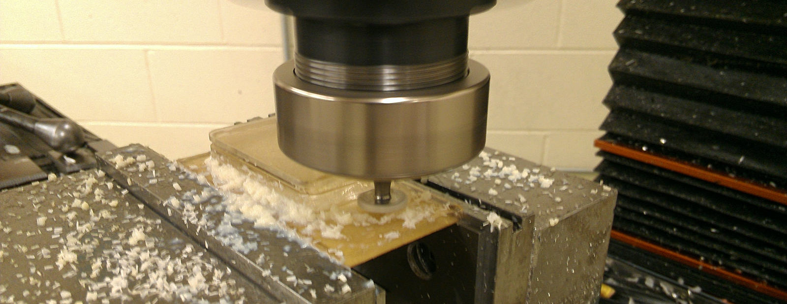

A woodruff cutter cuts preprogrammed grooves into acrylic stock for a waterproof box
I'm a senior engineering major attending Harvey Mudd College. While at Mudd,
I've been tackling a number of electronics and machining projects both
for research and for fun, many of
which are documented in the Projects page. While I'm driven to pursue robotics, my
interests and hobbies jump all over the fields of mechatronics design and
computer science. (Luckily, robotics can find a home for most of these!)
In the summer of 2012, I wrote a collection of software drivers for ROS
(Robot Operating System) to interface several MEMS sensors under a generic
framework. The open-source drivers can be found
here.
Currently, as part of HMC's
LAIR research lab,
I am developing a mechanical armature to augment the field of view
on a sonar for an underwater robot.
For me, the first few steps towards understanding some of the fundamentals
have been some of the toughest, but I believe that a little understanding
can be very empowering. With this idea in mind, I decided to proctor
in the machine shop and tutor for both Mudd's
Autonomous Vehicles
and
Digital Electronics
courses. I also co-founded the
FabStudio club,
a club devoted to giving students the resources to pursue
their own Do-it-yourself (DIY) projects. I hope that by tutoring, others too
can share in the excitement of electronics, robotics, and machining.
When I'm not popping open discarded printers for spare parts or programming
AVR chips, I also enjoy hiking, bicycling, and making noise on the guitar.
email: jvasquez [at] g [dot] hmc [dot] edu
Résumé